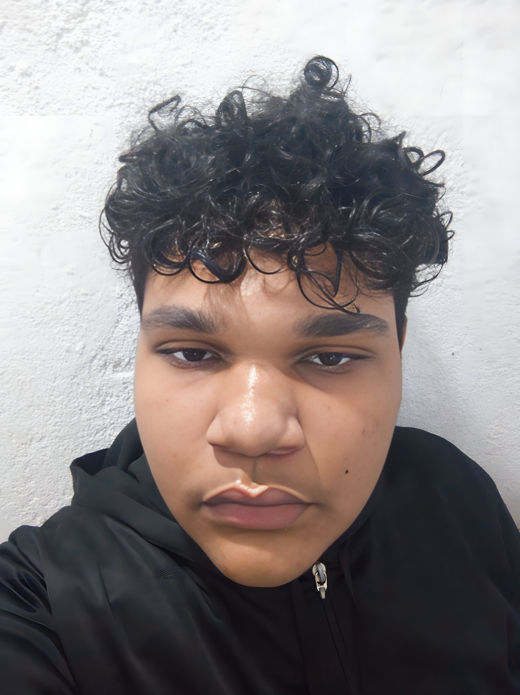

Conheça a Equipe ITO

Lucas Felipe
Responsável pelo conteúdo visual e desenvolvimento do site. Criativo e detalhista, supervisor de tarefas e organizador.
Matheus Ean
Responsável pela prototipação, líder da equipe de pesquisa e elementos gráficos.
Thayllon Mateus
Auxiliou na organização do website, estruturação das páginas e padronização do conteúdo.

Vinicius Rodrigues
Responsável pelas pesquisas e informações sobre cada doença ocular.